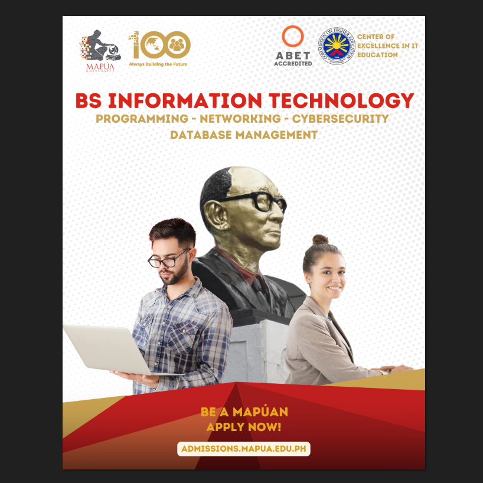

My Portfolio
Work Immersion

Information Technology E-Portfolio Template on Github
This was our first work immersion task. My group mates in creating this project are Joel P. Abad, Mariux Jozef C. Alotaya, and Joachim Mikhael P. Baldueza.
Click here to see the full website

B.S. Information Technology Social Media Pubmat
This is one of our tasks for the second and last week of our work immersion. My group mates are the same as the E-Portfolio template task.
B.S. Information Technology Social Media Video
This is one of our tasks for the second and last week of our work immersion. My group mates are the same as the E-Portfolio template task.